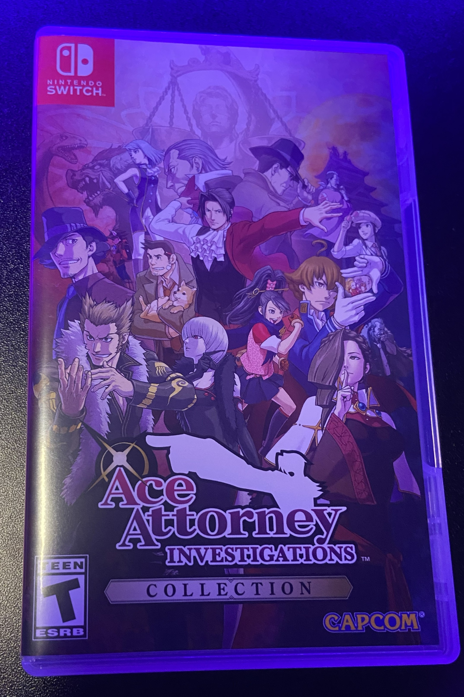

stuff
fanfic
While I have an Archive of Our Own account, I wanted a personal archive as well, in case AO3 ever goes down for good (or even temporarily). My fics are archive locked, so the direct links won't work without an Archive of Our Own account. "Why post your fics for anyone to see here if they're archive locked?" Why do we do anything, huh? I don't know. I thought it would be cool.
- Between a Rock and a Hard Place | read on website | 2361 words | Explicit
- Takumi's afraid of the boy who's been stalking him and decides to confront him in the bathroom. It does not go as planned.
- noncon/rape, stalking, drugging, somnophilia, grinding, coming in pants, high school AU, vomiting. Eito tops.
- Load-Bearing Eito Aotsuki | read on website | 936 words | Explicit
- Takumi wonders where all his missing clothes have gone. Luckily for him, Eito knows where they are.
- ...or, Eito masturbates using Takumi's clothes.
- It's not Valentine's Day, but someone's still confessing their love to me! | read on website | 1047 words | Mature
- Takumi receives a note from a "Secret Admirer." Determined to find out who it is, he meets up with them.
- Perfection | read on website | 1228 words | Explicit
- Somehow, Eito is able to score a reward from Takumi, and asks to have sex with him.
- dubcon, (arguably gratuitous) self-harm, porn without plot, riding, multiple orgasms, creampie. Eito tops. Contains spoilers for ending 041.
- Our Future | read on website | 100 words | Teen
- Takumi thinks about what led him to kill Eito for the second time.
- contains Slasher Route spoilers. Written for Eitaku Week 2025!
- Weightless | read on website | 1511 words | Teen
- Takumi sets sail to create a map of an unexplored planet. One night, he gets distracted by a beautiful song.
- AU where Takumi's a sailor and Eito's a siren. Written for Eitaku Week 2025!
- An Eye for an Eye | read on website | 1565 words | Mature
- Eito wants to see the world from a different perspective.
- graphic depictions of violence, self-harm (I call it "the ripping out your own eyeball kind" in the tags which is pretty accurate), gore, eye trauma, non-consensual kissing. Contains spoilers for 042.
- Honey | read on website | 913 words | Mature
- Eito takes a bathroom break.
- graphic depictions of violence, self-harm (cutting)
- Having Your Cake (and Eating It Too) | read on website | 1407 words | Teen
- Eito needs some help getting around school ... and eating. So, he enlists Takumi for the task.
- contains Second Scenario spoilers
itabag

- Eito/Takumi heart maid pins: purchased from eitaku maid cafe online store
- Eito/Takumi plush buttons by MARLOWEMENO
- Sakura Miku button by StoneUmbrella
- Tamamori heart button by ZealliArt
- Rosettes by me!
- Birthday Miku button by SykopopShop
- Monitoring Miku button by teamiibos
- Strawberry Miku button by SykopopShop
- Kagamine Rin/Len button by drfrogphd
- Eito/Takumi enamel pins by kalopseance
- Eito/Takumi linking heart keychain by IbbleScribbles
- Needy Girl Overdose pins by DEADWW
shelf

- hndr log by kurapixel
- Rebellion, 001 maid, nyota maid postcards are also by kurapixel
- Eito/Takumi stickers by shiroplushieshop
- Takumi sketch (below stickers) also by shiroplushieshop
- Multiple Eitos standee by kabukeo_
- Eito/Takumi "thank you" card also by kabukeo_
- eitaku sketch log (farthest on right) by jd5vlp
- Eito carrying Takumi sticker by kalopsceance
- Eito/Takumi bathroom standee by 100horses
switch game collection
|  |  |
 |
 |
 |
 |
 |
- Ace Attorney Investigations Collection
- Balatro
- Emio The Smiling Man
- The Hundred Line -Last Defense Academy-
- No Sleep for Kaname Date from AI The Somnium Files
- Master Detective Archives: Rain Code
- 古書店街の橋姫 々 Hashihime of the Old Book Town NOMA
Will hopefully add two more to this list soon so this table doesn't look like dogshit. I plan to buy the physical edition of Danganronpa 2x2...whenever that's going to come out. The other game though, well, I don't know.